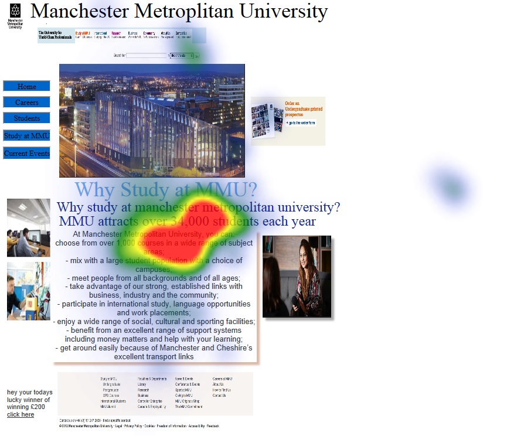
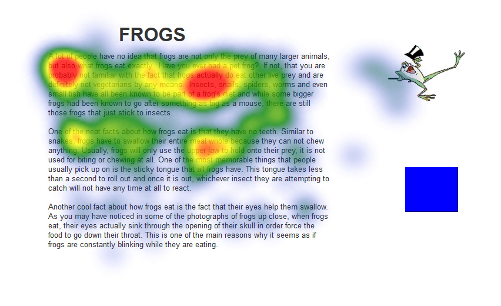

Eye tracking is when you measure where one is looking or where an individuals gaze is focused. The main aim is to measure the point of gaze.
Eye tracking relates to usability testing as it allow you to test your website, apps and even products. By testing your system or service using eye tracking you are able to attain results on problems within your software application. Also methods in which it can be improved. The eye tracker allows you to see what a user misses or what they focus on, when viewing your website or app.
Well let me tell you..
If a user wants to buy a product but due to your websites poor interface they wont achieve this aim of buying
any products or achieving their goal on your application.
This result in you not only loosing profit but
customers too. Neither will your market share increase. By conducting eye tracking experiments you as an
observer can see problems and users reactions at that very moment. You are able to gain their views.
The eye tracker allows you to retrieve information such as click metrics, and eye tracking visualizations such
as gaze plots, heat maps and gaze replays, results can easily be interpreted and findings can be presented.
These findings allow developers to be able to see where there designs can be improved or key points they are
missing in their product.
For example in this one eye tracking study I conducted the user misses the error when logging in to a system.
Now at this point the user is confused on what they should do next.
Eye tracking allowed me to realise that the user was unable to see the error therefore appropriate changes were
made to the interface.
In another eye tracking study when asking the user to focus on a specific task they missed certain elements, which a developer may think they had seen, but in reality they didn't. Eye tracking shows us that the user didn't see the image or a specific element. As shown below the user misses the fact they won £200 at the bottom of the screen, as they did not look at this part of the screen. Now that's a benefit as a designer it informs me that the layout design needs to be changed.
A final study is when an image slightly toggles or moves, this can gain a users attention. Eye tracking allows you to see whether elements like these work and if so where. For example when a user enters incorrect information it could slightly toggle this will attract the users perception and allow them to make the correct changes. I conducted an experiment on this to prove that you can gain users attention if a graphic toggles or moves.
